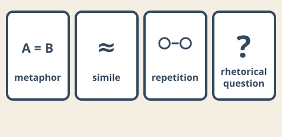

Stilmittel und ihre Wirkung
Mit einem KI-Tutor lernen
Ein KI-Tutor erklärt dir diese Seite und hilft dir bei den Aufgaben. Wähl deinen Assistenten:
Mit Claude öffnen Mit ChatGPT öffnen Mit Mistral Vibe öffnen
Du nutzt dein eigenes Konto beim Anbieter. Der Assistent ist kein Angebot von lernapps.net: lernapps liefert nur Inhalte und Aufgaben. Die Wahl gilt für alle Seiten, nur auf diesem Gerät.
Wie klingt ein Text?
Aufgabe
Lösung
He runs like the wind richtige Antwort
Der Satz vergleicht das Laufen mit dem Wind und benutzt dafür like.
He is the wind
Hier fehlt das Wort like. Der Satz nennt ihn direkt Wind.
He runs very fast
Dieser Satz sagt nur, wie schnell er ist. Er vergleicht nichts.
Auf dieser Seite lernst du den Vergleich und drei weitere Stilmittel kennen.
Das kannst du danach: Du erkennst Metapher, Vergleich, Wiederholung und rhetorische Frage in einem Text und beschreibst, wie sie auf die Zuhörer wirken.
Eine Rede
| Englisch | Deutsch |
|---|---|
| audience | Publikum |
| listener | Zuhörer, Zuhörerin |
| emphasise | betonen |
| heap | Haufen |
| spade | Spaten |
| tyre | Reifen |
| shed | Schuppen |
| weed | Unkraut |
| bed | Beet |
| guard | Wächter, Wache |
| bridge | Brücke |
Die Zahlen in eckigen Klammern sind die Zeilennummern des Textes. Die Rede hält die Gründerin eines Gemeinschaftsgartens, der heute eröffnet wird.
Our Garden
[1] Good evening, everyone, and welcome to the garden. Thank you for coming on such a cold evening.
[2] A year ago this place was a heap of broken bricks and old tyres. Nobody looked at it. Nobody wanted it. Today it is the green heart of our town.
[3] We dug. We planted. We waited. And when the first beans came up, the whole street came to see them.
[4] On rainy Saturdays only the brave came. We drank tea in the shed and made plans. Some of us could not tell a weed from a flower. Now they give lessons, and the best lessons come from the people who made the most mistakes.
[5] Did anyone believe that a few people with spades could change a car park? Did anyone think the neighbours would come with tea and cake?
[6] I did not. I thought we would fail, and I was ready to give up quietly. In March a storm took the roof off the shed, and in May somebody took our watering cans. Each time I thought, “This is the end.”
[7] But look at the beds now. The tomatoes are as red as a fire engine. The sunflowers stand in a row like tall guards. In the evening the whole garden is as quiet as a sleeping cat.
[8] This garden is not only soil and seeds. It is a bridge between people who never said hello.
[9] Together we built it. Together we looked after it. Together we will keep it.
[10] So, what do we do next? We open the gate, we invite everyone in, and we plant again. If you have a free Saturday, come and bring a spade, an idea or just a friend. Thank you.
Vier Stilmittel und ihre Wirkung
Stilmittel (stylistic devices) sind sprachliche Mittel, mit denen ein Text wirkt. Wichtiger als der Name ist die Wirkung: Was soll das Publikum fühlen oder denken?
- metaphor
Die Metapher nennt etwas mit dem Namen von etwas anderem, ohne like oder as.
- simile
Der Vergleich verbindet zwei Dinge mit like oder as … as.
- repetition
Die Wiederholung bringt Wörter oder Satzmuster zurück, um etwas zu betonen.
- rhetorical question
Die rhetorische Frage braucht keine Antwort und lässt das Publikum nachdenken.

© CC-BY-4.0Vier neue Karten für deinen Werkzeugkasten.
| Karte | Leitfrage | Satzanfang |
|---|---|---|
| metaphor | What is called something that it is not? | The metaphor … shows that … |
| simile | What is compared with like or as … as? | The simile compares … with … |
| repetition | Which words come back? | The repetition emphasises … |
| rhetorical question | Which question needs no answer? | The rhetorical question makes the listeners … |
| Stilmittel | Beispiel |
|---|---|
| metaphor | Time is a thief. |
| simile | as brave as a lion |
| repetition | Never, never, never give up. |
| rhetorical question | Who needs homework anyway? |
Merke
Benenne das Stilmittel und beschreibe die Wirkung. „Das ist eine Metapher“ reicht nicht. Schreibe, was sie zeigt oder bewirkt, und gib die Zeile an.
Der Unterschied: Ein Vergleich hat das Wort like oder as … as. Eine Metapher hat es nicht, sie nennt eine Sache einfach mit dem Namen einer anderen.
Finde die Stilmittel in der Rede
Aufgabe
Lösung
Richtige Antwort: Today it is the green heart of our town. – metaphor; as quiet as a sleeping cat – simile; We dug. We planted. We waited. – repetition; Did anyone think the neighbours would come with tea and cake? – rhetorical question
Die Metapher hat kein Vergleichswort, der Vergleich hat as … as. Die Wiederholung bringt Wörter oder Satzmuster zurück. Die rhetorische Frage verlangt keine Antwort.
Aufgabe
Lösung
Zeile 2 richtige Antwort
Der Garten wird „the green heart of our town“ genannt. Es steht kein like und kein as dabei.
Zeile 3
In Zeile 3 kommen Sätze mit gleichem Aufbau wieder. Das ist eine Wiederholung.
Zeile 5
In Zeile 5 stehen Fragen ohne Antwort, rhetorische Fragen.
Zeile 7
In Zeile 7 stehen Vergleiche mit as … as und like. Das sind keine Metaphern.
Zeile 8 richtige Antwort
Der Garten wird „a bridge between people“ genannt. Ein Vergleichswort fehlt.
Die Zeilen 2 und 8 nennen den Garten mit dem Namen von etwas, das er nicht wörtlich ist.
Aufgabe
Lösung
The repetition of “Together” emphasises that the work belongs to everyone (l. 9) richtige Antwort
Der Satz benennt das Stilmittel, beschreibt die Wirkung und nennt die Zeile.
The repetition shows that the speaker forgot the next word (l. 9)
Das ist keine Wirkung auf die Zuhörer, sondern eine Behauptung ohne Grund im Text.
The repetition is a simile that compares the people with a team (l. 9)
Ein Vergleich braucht like oder as. In Zeile 9 steht keins von beidem.
The repetition makes the speech longer (l. 9)
Das beschreibt die Länge, nicht die Wirkung. Die Wiederholung hebt etwas hervor.
Eine gute Antwort nennt das Stilmittel, seine Wirkung und die Zeile.
Aufgabe
Schreibe einen Satz mit dem Satzanfang der Karte metaphor und gib die Zeile als Beleg an. Was zeigt die Metapher vom grünen Herzen?
Tipp
Das Herz ist das Wichtigste im Körper. Was heißt das für den Garten?
- metaphor · show · garden · important · town
Lösung
- The metaphor shows that the garden is very important for the town (l. 2). (auch richtig: The metaphor shows that the garden is very important to the town (l. 2).; The metaphor shows that the garden is very special for the town (l. 2).; The metaphor shows that the garden is very special to the town (l. 2).; The metaphor shows that the garden is very valuable for the town (l. 2).; The metaphor shows that the garden is very valuable to the town (l. 2).; The metaphor shows that the garden is important for the town (l. 2).; The metaphor shows that the garden is important to the town (l. 2).; The metaphor shows that the garden is special for the town (l. 2).; The metaphor shows that the garden is special to the town (l. 2).; The metaphor shows that the garden is valuable for the town (l. 2).; The metaphor shows that the garden is valuable to the town (l. 2).)
Der Satz nennt die Karte, die Wirkung und die Zeile.
Aufgabe
Lösung
Die Zuhörer sollen selbst darüber nachdenken richtige Antwort
Eine rhetorische Frage braucht keine Antwort. Sie lässt die Zuhörer die Antwort selbst finden.
Sie kennt die Antwort nicht
Sie sagt in Zeile 6, was sie selbst gedacht hat. Die Fragen sind kein Zeichen von Unwissen.
Sie wartet auf Antworten aus dem Publikum
Dann wäre es eine echte Frage. Im Text antwortet niemand.
Die Fragen gehören zur Handlung des Gartens
Die Fragen sind Teil der Rede, nicht der Handlung.
Die rhetorische Frage zieht die Zuhörer in den Gedanken hinein.
Aufgabe
Höre den Satz und schreibe ihn auf.
- KI
- KI
- KI
Lösung
- A metaphor calls one thing by the name of another.
- Repeated words make a sentence stronger.
- The speaker asks a question and expects no answer.
Die Sätze benutzen die Begriffe in neuen Zusammenhängen.
Beschreibe die Wirkung der Rede
Offene Aufgabe
Wähle drei Stilmittel der Rede und beschreibe in drei englischen Sätzen ihre Wirkung. Nutze je den Satzanfang der Karte und gib eine Zeile an.
Eine gute Antwort enthält:
Lösung
The metaphor “the green heart of our town” shows that the garden is very important for the town (l. 2). The repetition of “Together” emphasises that the work belongs to everyone (l. 9). The rhetorical question makes the listeners think about what a few people can change (l. 5).
Die App bewertet deinen Text nicht. Prüfe ihn selbst an den Punkten.
Aufgabe
Höre dir jeden Satz an, sprich ihn nach und nimm dich auf. Höre dich dann an und bewerte deine Aussprache selbst.
- The audience listens carefully.KI
- A simile uses like or as to compare.KI
- The question makes the listeners wonder.KI
Zum Aufnehmen braucht diese Aufgabe JavaScript. Die Beispiele kannst du auch ohne anhören.
Lösung
- The audience listens carefully.
- A simile uses like or as to compare.
- The question makes the listeners wonder.
Dein sechster Listeneintrag
Schreibe für die Lese- und Sehliste einen Satz zur Rede mit einem Stilmittel, das dich überzeugt hat, zum Beispiel „The simile … compares … with …“, und nenne die Zeile. Auf der nächsten Seite untersuchst du ein Gedicht und einen Songtext.
Fehler gefunden oder eine Idee für diese App?